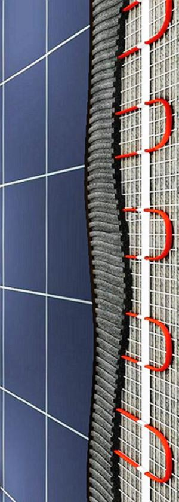
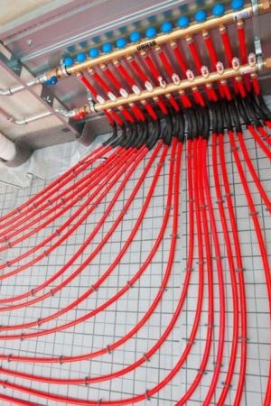
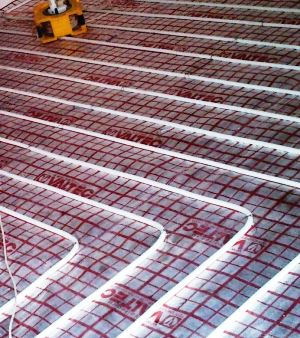
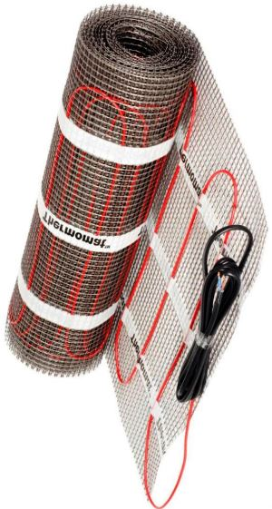

Качественный электромонтаж, Стаж 12 лет. Частный электрик, недорого.
Тел. 8 904 642 08 57 Николай.

Мастер по тёплому полу.
Согласитесь, так приятно проснуться утром и босиком пройти на кухню. Особенно, если под ногами теплый пол. Сделать свой дом более комфортным стремится каждый уважающий себя хозяин. Устройство теплого пола - замечательное подспорье в этом деле. Этот способ дополнительного обогрева помещения хорош тем, что меньше сушит воздух, по сравнению с радиаторами, не скрадывает полезную площадь, а также позволяет реализовать любые дизайнерские идеи.
Сколько стоит услуги мастера электрика по тёплым полам.
Площадь тёплого пола в кв. м. |
Цена за монтаж кв. м. в руб. |
До 10 кв. м. |
От 500 |
20 |
400 |
30 |
300 |
40 |
280 |
50 |
260 |
60 |
240 |
От 60 кв. м. |
От 220 руб. |
Советы электрика по тёплому полу. Какие основные виды теплого пола сегодня существуют:
- Водяные, в которых горячая вода (или другой жидкий теплоноситель) циркулирует по трубам;
- Электрические, в них происходит нагрев проводника электрического тока.
Устройство водяных полов при всей своей экономической выгоде имеет ряд ограничений. Среди них самое существенное то, что в многоквартирных домах вряд ли получится получить на это разрешение БТИ. Наиболее популярны среди электрических теплых полов - кабельные. Они удобны в укладке и эксплуатации. В строительных магазинах представлен большой их выбор, как в виде готовой системы, так и набором из отдельных элементов. Непрофессионалу удобнее всего будет приобрести теплый пол в виде комплекта.
В него входят:
- полотно пленки-сетки с прикрепленным к нему изогнутым кабелем;
- терморегулятор, предназначенный для управления температурой;
- провода соединения нагревательного кабеля с терморегулятором.
Настилаем теплый пол.
Последовательность работ при устройстве кабельного теплого пола следующая:
1. Подготовка основания.
Поверхность, на которой предполагается укладка теплого пола, должна быть чистой и ровной. Если на Вашем полу имеются значительные неровности, то их необходимо зачистить. Если же этого недостаточно, то придется залить самовыравнивающей смесью, либо сделать стяжку. Кстати, для деревянного пола также предпочтительнее стяжка. Ровная поверхность необходима для исключения поломки кабеля из-за резких перегибов.
2. Подготовка места в стене для терморегулятора.
Терморегулятор похож по размеру на выключатель, располагать его лучше в доступном месте на уровне руки. Подобные устройства, в соответствии с технологией монтажа, должны иметь отдельный вывод из щитка.
3. Укладка утеплителя.
Обычно в качестве утеплителя используют пенофол, рулонный утеплитель с покрытием из алюминиевой фольги. Полосы пенофола следует укладывать встык фольгой вверх. При этом нужно отступить 5-10 см от стен, а стыки заклеить обычным канцелярским скотчем.
4. Укладка нагревательного кабеля.
В случае использования кабеля, как отдельного элемента, необходимо на утеплитель сначала укрепить монтажную сетку. Она продается в рулонах. После этого на сетку зигзагообразно укладывается кабель. Расстояние между линиями укладки должно составлять 20-25см. Специальным монтажным скотчем для теплого пола кабель фиксируется на сетке. Термодатчик следует расположить так, чтобы в результате поломки не пришлось разбирать покрытие для замены. Для этого его можно поместить в гофрированную трубку и выпустить выше поверхности чистого пола.
Если же Вы приобрели комплект с нагревательными лентами, то их нужно просто разложить на расстоянии от стены, избегая соприкосновения полос. В том случае, когда необходимо выполнить разворот, монтажную сетку нужно разрезать (кабель повреждать нельзя), и повернуть полотно.
5. Монтаж терморегулятора.
Электрик устанавливают тёплый пол.
Перед установкой терморегулятора в стене рекомендуется сделать отверстие для самого устройства и канавку для соединительных проводов. Терморегулятор посредством электропроводов необходимо подключить с одной стороны к нагревательному кабелю, а с другой - к электрической сети.
После этого систему необходимо протестировать на соответствие параметрам, указанным в паспорте изделия. Для этого нужно измерить сопротивление тестером. Включать нагревающий кабель нельзя! Это выведет его из строя.
Когда вы убедитесь, что система работает правильно, можно приступать к устройству финального покрытия. Возможные варианты: сделать цементно-песчаную стяжку толщиной 4-5 см или уложить плитку обычным способом. При устройстве плиточного пола рекомендовано использовать плиточный клей, предназначенный специально для теплого пола.
Советы напоследок.
Для покрытия из ламината лучше выбирать пленочный теплый пол с инфракрасным излучением. В этом случае можно не опасаться деформаций покрытия.
Теплый пол, сделанный правильно и с использованием качественных материалов, прослужит долгие годы. Вы непременно оцените по достоинству комфортную атмосферу в доме. А затраты, связанные с устройством теплого пола, многократно окупятся добрым здоровьем и хорошим настроением домочадцев.


Сделать электрику в квартире.

Расценки на электропроводку квартир.

Провести электропроводку в новостройке.
